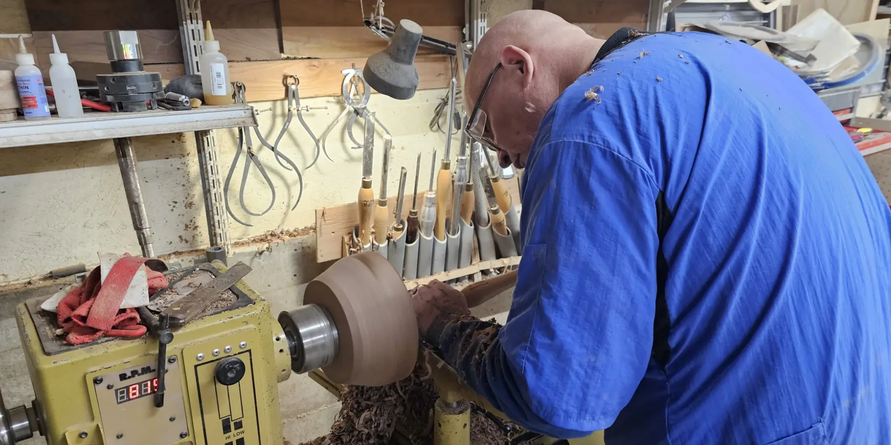

Turning Alaska: Handcrafted Creations from Ketchikan, Alaska
Run by master wood turner Steve Thomas, Turning Alaska is a Ketchikan Alaska based studio specializing in the art of woodturning. Steve creates stunning, handcrafted bowls and unique jewelry pieces, incorporating rare materials such as mammoth tusk and tooth. His work is sought after by local shops and collectors, blending natural beauty with skilled craftsmanship.
From locally sourced woods to ancient mammoth ivory, every piece from Turning Alaska tells a story, brought to life through Steve’s expert artistry.
Turning Wood into Art
News
There's no news currently.
Further questions?
Contact me at steve@turningalaska.com